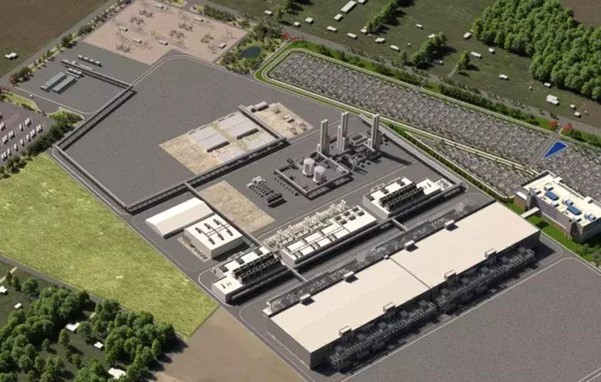

Aanvankelijk moeten er twee fabs komen op de locatie in New Albany, nabij Columbus, Ohio. De locatie is zo'n 405 hectare groot, zegt het bedrijf tegen TIME. Intel heeft daarnaast de mogelijkheid om de locatie met nog eens 405 hectare te vergroten en tot acht fabs te bouwen.
"Onze verwachting is dat dit de grootste siliciumproductielocatie gaat worden op de planeet", zegt Intels ceo Pat Gelsinger tegen het blad. "We hebben geholpen met het opzetten van Silicon Valley, nu gaan we hetzelfde doen met Silicon Heartland." Naast het produceren van chips, gaat Intel op de locatie ook nieuwe chips onderzoeken en ontwikkelen.
De chipmaker zegt nog niet hoeveel chips er in de fabrieken gemaakt kunnen worden. Wel zegt Intel dat het gedeeltelijk om een Intel Foundry Services-locatie gaat, en dat Intel er dus zowel eigen chips gaat maken, als chips voor andere bedrijven. Ook zegt het bedrijf dat er minstens 3000 werknemers nodig zijn voor de Ohio-locatie.
Intel zei afgelopen maart meer productielocaties te willen hebben in de VS en in Europa, naast de twee nieuwe fabs in Arizona die momenteel worden gebouwd en in 2024 operationeel moeten zijn. De bouw van die twee chipfabrieken kost ook 20 miljard dollar.
De ceo zegt tegen TIME dat Intel 38 verschillende locaties in de VS heeft overwogen, maar dat Ohio uiteindelijk de beste plek was. Deels vanwege financiële impulsen en medewerking van de lokale overheid, maar ook omdat er veel lokale hogescholen en universiteiten zijn waarvan Intel personeel zou kunnen werven. Intel gaat vrijdagavond om 20.30 uur meer bekendmaken over de nieuwe productielocatie.
